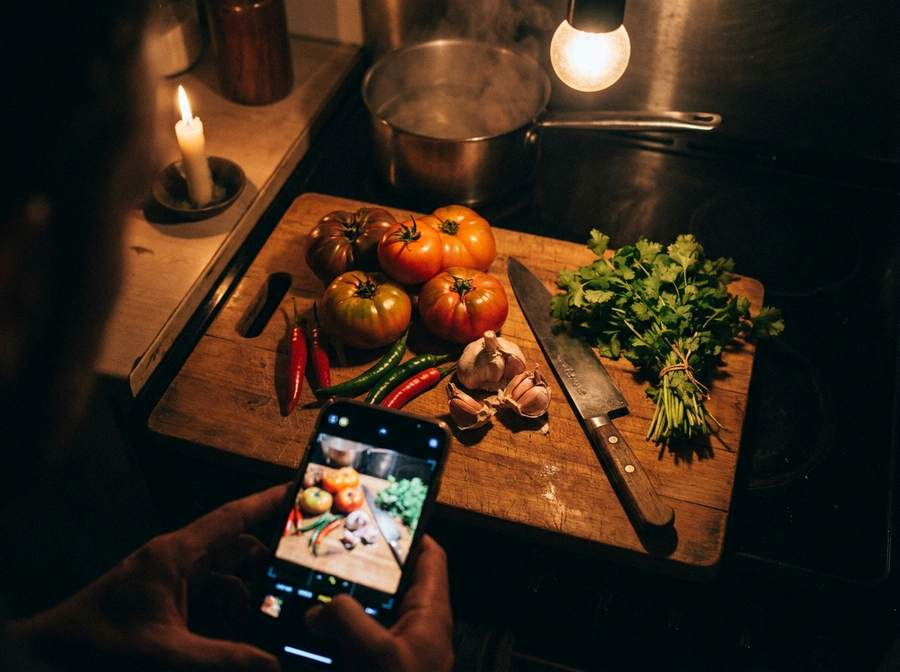
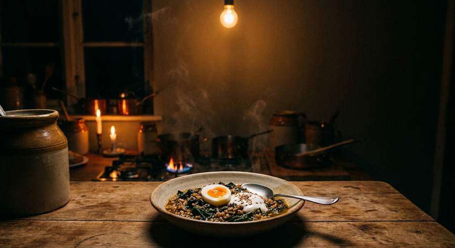

<meta charset="utf-8">
<meta name="viewport" content="width=device-width, initial-scale=1">
<meta name="description" content="Live cooking from kitchens within 50 miles of you. Simmer is in closed beta on iPhone and Android.">
<title>Simmer Beta</title>
<link rel="preconnect" href="https://fonts.googleapis.com">
<link rel="preconnect" href="https://fonts.gstatic.com" crossorigin>
<link rel="stylesheet" href="https://fonts.googleapis.com/css2?family=Archivo:wght@500;700;900&family=Instrument+Sans:wght@400;500;600&family=DM+Mono:wght@400;500&display=swap">

<style>
  :root {
    --ground:      #FDF6EF;
    --raised:      #FFFFFF;
    --sunk:        #F3E9DD;
    --ink:         #14100E;
    --ink-soft:    #6B5F58;
    --rule:        #E4D6C7;
    --ember:       #D2431E;
    --saffron:     #B8760C;
    --shadow:      0 1px 2px rgba(20,16,14,.06), 0 10px 30px rgba(20,16,14,.08);

    /* The hero is a photograph of a dark kitchen in both themes, so the type
       that sits on it is fixed rather than themed. */
    --on-film:     #FDF6EF;
    --on-film-dim: #C9B8AC;

    --step--1: clamp(.78rem, .76rem + .1vw, .84rem);
    --step-0:  clamp(1rem, .97rem + .16vw, 1.09rem);
    --step-1:  clamp(1.2rem, 1.12rem + .38vw, 1.45rem);
    --step-2:  clamp(1.5rem, 1.3rem + .9vw, 2.1rem);
    --step-3:  clamp(2.1rem, 1.6rem + 2.3vw, 3.6rem);
    --step-4:  clamp(2.7rem, 1.6rem + 4.9vw, 5.8rem);
  }
  @media (prefers-color-scheme: dark) {
    :root:not([data-theme="light"]) {
      --ground:   #14100E;
      --raised:   #1F1A17;
      --sunk:     #100C0A;
      --ink:      #FDF6EF;
      --ink-soft: #9C8F86;
      --rule:     #342C26;
      --ember:    #FF6A3D;
      --saffron:  #F5A623;
      --shadow:   0 1px 2px rgba(0,0,0,.4), 0 14px 36px rgba(0,0,0,.4);
    }
  }
  :root[data-theme="dark"] {
    --ground:   #14100E;
    --raised:   #1F1A17;
    --sunk:     #100C0A;
    --ink:      #FDF6EF;
    --ink-soft: #9C8F86;
    --rule:     #342C26;
    --ember:    #FF6A3D;
    --saffron:  #F5A623;
    --shadow:   0 1px 2px rgba(0,0,0,.4), 0 14px 36px rgba(0,0,0,.4);
  }

  * { box-sizing: border-box; }
  body {
    margin: 0;
    background: var(--ground);
    color: var(--ink);
    font-family: "Instrument Sans", ui-sans-serif, system-ui, -apple-system, sans-serif;
    font-size: var(--step-0); line-height: 1.6;
    -webkit-font-smoothing: antialiased;
    overflow-x: hidden;
  }
  .wrap { width: min(1120px, 100% - 2.5rem); margin-inline: auto; }
  h1, h2, h3 {
    font-family: Archivo, ui-sans-serif, system-ui, sans-serif;
    font-weight: 900; line-height: .95; letter-spacing: -.03em;
    text-wrap: balance; margin: 0;
  }
  p { margin: 0; max-width: 62ch; }
  a { color: inherit; }
  .eyebrow {
    font-family: "DM Mono", ui-monospace, monospace; font-size: var(--step--1);
    letter-spacing: .14em; text-transform: uppercase; color: var(--ember); margin: 0;
  }
  :focus-visible { outline: 3px solid var(--ember); outline-offset: 3px; border-radius: 2px; }

  /* ---- masthead -------------------------------------------------------- */
  header.top {
    position: fixed; inset: 0 0 auto; z-index: 30;
    transition: background .3s, border-color .3s, backdrop-filter .3s;
    border-bottom: 1px solid transparent;
  }
  header.top.stuck {
    background: color-mix(in srgb, var(--ground) 88%, transparent);
    backdrop-filter: blur(14px); border-bottom-color: var(--rule);
  }
  .top .wrap {
    display: flex; align-items: center; gap: .6rem; padding: .9rem 0;
  }
  .mark {
    font-family: Archivo, sans-serif; font-weight: 900; font-size: 1.4rem;
    letter-spacing: -.05em; color: var(--on-film); text-decoration: none;
    transition: color .3s;
  }
  header.top.stuck .mark { color: var(--ember); }
  .top-cta {
    font-family: "DM Mono", monospace; font-size: var(--step--1);
    text-decoration: none; border: 1px solid color-mix(in srgb, var(--on-film) 40%, transparent);
    color: var(--on-film); border-radius: 100px; padding: .5rem 1.05rem;
    white-space: nowrap; transition: color .3s, border-color .3s, background .2s;
  }
  header.top.stuck .top-cta { color: var(--ink); border-color: var(--rule); }
  .top-cta:hover { background: var(--ember); border-color: var(--ember); color: #fff; }

  /* ---- the film -------------------------------------------------------- */
  .film {
    position: relative; min-height: min(94svh, 860px);
    display: flex; align-items: flex-end;
    padding: 8rem 0 clamp(2.5rem, 6vw, 4.5rem);
    overflow: hidden; isolation: isolate; background: #0B0808;
  }
  .film-plate {
    position: absolute; inset: -8% 0 -8%; z-index: -3;
    background: url("art/hero.jpg") center 62% / cover no-repeat;
    will-change: transform;
  }
  /* Two scrims: one grounds the type, one keeps the top bar legible. */
  .film::before {
    content: ""; position: absolute; inset: 0; z-index: -2;
    background:
      linear-gradient(to top, #0B0808 4%, rgba(11,8,8,.86) 30%, rgba(11,8,8,.25) 66%, rgba(11,8,8,.55) 100%);
  }
  .embers { position: absolute; inset: 0; z-index: -1; pointer-events: none; }

  .film h1 { font-size: var(--step-4); max-width: 16ch; color: var(--on-film); }
  .film h1 em { font-style: normal; color: var(--ember); }
  .film .lede {
    margin-top: 1.4rem; font-size: var(--step-1);
    color: var(--on-film-dim); max-width: 44ch;
  }
  .live-now {
    display: inline-flex; align-items: center; gap: .6rem;
    font-family: "DM Mono", monospace; font-size: var(--step--1);
    letter-spacing: .12em; text-transform: uppercase;
    color: var(--saffron); margin-bottom: 1.5rem;
  }
  .dot {
    width: 9px; height: 9px; border-radius: 50%; background: var(--ember); flex: none;
    box-shadow: 0 0 0 0 color-mix(in srgb, var(--ember) 70%, transparent);
    animation: pulse 2.4s ease-out infinite;
  }
  @keyframes pulse {
    70%  { box-shadow: 0 0 0 11px color-mix(in srgb, var(--ember) 0%, transparent); }
    100% { box-shadow: 0 0 0 0  color-mix(in srgb, var(--ember) 0%, transparent); }
  }

  /* the load sequence: each line of the hero arrives in turn */
  .cue { opacity: 0; transform: translateY(20px); }
  .lit .cue { animation: cue .8s cubic-bezier(.16,1,.3,1) forwards; }
  .lit .cue:nth-child(1) { animation-delay: .05s; }
  .lit .cue:nth-child(2) { animation-delay: .17s; }
  .lit .cue:nth-child(3) { animation-delay: .29s; }
  .lit .cue:nth-child(4) { animation-delay: .41s; }
  @keyframes cue { to { opacity: 1; transform: none; } }

  /* ---- buttons --------------------------------------------------------- */
  .routes { display: flex; flex-wrap: wrap; gap: .85rem; margin-top: 2.3rem; }
  .btn {
    display: inline-flex; align-items: center; gap: .7rem; text-decoration: none;
    border-radius: 100px; padding: .95rem 1.6rem; font-weight: 600;
    border: 1px solid transparent; white-space: nowrap;
    transition: transform .2s cubic-bezier(.2,0,0,1), background .2s, border-color .2s, box-shadow .2s;
  }
  .btn:hover { transform: translateY(-2px); }
  .btn-primary {
    background: var(--ember); color: #fff;
    box-shadow: 0 6px 22px color-mix(in srgb, var(--ember) 38%, transparent);
  }
  .btn-primary:hover { box-shadow: 0 10px 30px color-mix(in srgb, var(--ember) 48%, transparent); }
  .btn-film {
    border-color: color-mix(in srgb, var(--on-film) 42%, transparent);
    color: var(--on-film); backdrop-filter: blur(6px);
    background: color-mix(in srgb, #000 22%, transparent);
  }
  .btn-film:hover { border-color: var(--on-film); }
  .btn-ghost { border-color: var(--rule); color: var(--ink); background: var(--raised); }
  .btn-ghost:hover { border-color: var(--ember); color: var(--ember); }
  .btn svg { flex: none; }
  .btn small { display: block; font-weight: 400; font-size: .72rem; opacity: .82; line-height: 1.25; }

  /* ---- the pass -------------------------------------------------------- */
  .pass { padding: clamp(3rem, 7vw, 5.5rem) 0 clamp(2rem, 4vw, 3rem); }
  .pass-head {
    display: flex; align-items: baseline; justify-content: space-between;
    gap: 1rem; flex-wrap: wrap; padding-bottom: 1rem; border-bottom: 2px solid var(--ink);
  }
  .pass-head span {
    font-family: "DM Mono", monospace; font-size: var(--step--1);
    color: var(--ink-soft); font-variant-numeric: tabular-nums;
  }
  .dockets { list-style: none; margin: 0; padding: 0; }
  .docket {
    display: grid; gap: .15rem 1.25rem; align-items: baseline;
    grid-template-columns: 1fr auto; padding: 1.1rem .25rem;
    border-bottom: 1px solid var(--rule);
    transition: background .25s, padding-inline .25s;
  }
  .docket:hover { background: var(--sunk); padding-inline: .75rem .5rem; }
  .docket .dish { font-weight: 600; font-size: var(--step-1); letter-spacing: -.01em; }
  .docket .who {
    grid-column: 1; font-family: "DM Mono", monospace;
    font-size: var(--step--1); color: var(--ink-soft);
  }
  .docket .meta {
    grid-column: 2; grid-row: 1 / span 2; text-align: right;
    font-family: "DM Mono", monospace; font-size: var(--step--1);
    color: var(--ink-soft); font-variant-numeric: tabular-nums; line-height: 1.5;
  }
  .docket .meta b { color: var(--saffron); font-weight: 500; display: block; }

  /* ---- picture bands --------------------------------------------------- */
  .band { padding: clamp(3rem, 8vw, 6rem) 0; }
  .band-inner { display: grid; gap: clamp(1.8rem, 4vw, 3.5rem); align-items: center; }
  @media (min-width: 900px) {
    .band-inner { grid-template-columns: 1fr 1fr; }
    .band.flip .band-inner > .shot { order: -1; }
  }
  .shot {
    position: relative; border-radius: 20px; overflow: hidden;
    box-shadow: var(--shadow); aspect-ratio: 16 / 11; background: #0B0808;
  }
  .shot img {
    width: 100%; height: 100%; object-fit: cover; display: block;
    transform: scale(1.09); transition: transform 1.4s cubic-bezier(.16,1,.3,1);
  }
  .shot.in img { transform: scale(1); }
  .band h2 { font-size: var(--step-3); margin-top: .7rem; }
  .band p { margin-top: 1.1rem; color: var(--ink-soft); }
  .nots { list-style: none; margin: 1.5rem 0 0; padding: 0; display: grid; gap: .5rem; }
  .nots li {
    font-family: "DM Mono", monospace; font-size: var(--step--1);
    color: var(--ink-soft); display: flex; align-items: center; gap: .7rem;
  }
  .nots li::before { content: ""; width: 15px; height: 2px; background: var(--ember); flex: none; }
  .small-print {
    margin-top: 1.4rem; padding-top: 1.1rem; border-top: 1px solid var(--rule);
    font-size: var(--step--1); color: var(--ink-soft); max-width: 52ch;
  }

  /* ---- pillars --------------------------------------------------------- */
  .pillars { padding: clamp(2rem, 5vw, 3.5rem) 0 clamp(3rem, 7vw, 5rem); }
  .pillar-grid {
    display: grid; gap: clamp(1.2rem, 2.4vw, 2rem);
    grid-template-columns: repeat(auto-fit, minmax(255px, 1fr)); margin-top: 2.2rem;
  }
  .pillar {
    background: var(--raised); border: 1px solid var(--rule);
    border-radius: 18px; padding: 1.6rem; box-shadow: var(--shadow);
    transition: transform .3s cubic-bezier(.2,0,0,1), border-color .3s;
  }
  .pillar:hover { transform: translateY(-4px); border-color: color-mix(in srgb, var(--ember) 45%, var(--rule)); }
  .pillar h3 { font-size: var(--step-1); margin-bottom: .55rem; letter-spacing: -.02em; }
  .pillar p { color: var(--ink-soft); }
  .pillar .tag {
    font-family: "DM Mono", monospace; font-size: .7rem; letter-spacing: .12em;
    text-transform: uppercase; color: var(--ember); display: block; margin-bottom: .85rem;
  }

  /* ---- join ------------------------------------------------------------ */
  .join {
    padding: clamp(3.5rem, 9vw, 6.5rem) 0; text-align: center;
    background: var(--sunk); border-top: 1px solid var(--rule);
  }
  .join h2 { font-size: var(--step-3); margin-inline: auto; max-width: 17ch; }
  .join > .wrap > p { margin: 1.15rem auto 0; color: var(--ink-soft); }
  .join .routes { justify-content: center; }
  .caveat {
    margin: 2.2rem auto 0; max-width: 54ch; text-align: left;
    font-family: "DM Mono", monospace; font-size: var(--step--1);
    color: var(--ink-soft); line-height: 1.75;
  }
  .caveat b { color: var(--ink); font-weight: 500; }

  footer {
    border-top: 1px solid var(--rule); padding: 2rem 0 3rem;
    font-family: "DM Mono", monospace; font-size: var(--step--1); color: var(--ink-soft);
  }
  footer .wrap { display: flex; flex-wrap: wrap; gap: .6rem 1.6rem; justify-content: space-between; }

  .rise { opacity: 0; transform: translateY(16px); }
  .rise.in { opacity: 1; transform: none; transition: opacity .6s ease, transform .7s cubic-bezier(.16,1,.3,1); }

  @media (prefers-reduced-motion: reduce) {
    .rise, .rise.in, .cue, .lit .cue { opacity: 1; transform: none; transition: none; animation: none; }
    .shot img, .shot.in img { transform: none; transition: none; }
    .dot { animation: none; }
    .btn:hover, .pillar:hover { transform: none; }
    .film-plate { transform: none !important; }
  }
</style>

<header class="top">
  <div class="wrap">
    <a class="mark" href="#top" style="margin-right:auto">Simmer</a>
    <a class="top-cta" href="#earn">For cooks</a>
    <a class="top-cta" href="#join">Join the beta</a>
  </div>
</header>

<main id="top">
  <section class="film" id="film">
    <div class="film-plate" id="plate" aria-hidden="true"></div>
    <canvas class="embers" id="embers" aria-hidden="true"></canvas>
    <div class="wrap">
      <p class="live-now cue"><span class="dot" aria-hidden="true"></span>Now in closed beta</p>
      <h1 class="cue">Someone near you is <em>cooking dinner</em> right now.</h1>
      <p class="lede cue">
        Live cooking from kitchens within 50 miles of you. Not recipe videos.
        Not edited reels. Someone three streets away, at the hob, this minute.
      </p>
      <div class="routes cue">
        <a class="btn btn-primary" href="https://testflight.apple.com/join/TPReUMXr">
          <svg width="19" height="19" viewBox="0 0 24 24" fill="currentColor" aria-hidden="true"><path d="M16.4 12.8c0-2.3 1.9-3.4 2-3.5-1.1-1.6-2.8-1.8-3.4-1.8-1.4-.1-2.8.9-3.5.9s-1.8-.9-3-.8c-1.5 0-2.9.9-3.7 2.3-1.6 2.7-.4 6.8 1.1 9 .8 1.1 1.7 2.3 2.9 2.2 1.2 0 1.6-.7 3-.7s1.8.7 3 .7c1.3 0 2.1-1.1 2.8-2.2.9-1.3 1.3-2.5 1.3-2.6-.1 0-2.5-1-2.5-3.5zM14.2 5.9c.6-.8 1-1.9.9-3-.9 0-2 .6-2.7 1.4-.6.7-1.1 1.8-1 2.9 1 .1 2.1-.5 2.8-1.3z"/></svg>
          <span>Join on iPhone<small>TestFlight · open to anyone</small></span>
        </a>
        <a class="btn btn-film" href="https://play.google.com/store/apps/details?id=com.healthyverse.simmer">
          <svg width="19" height="19" viewBox="0 0 24 24" fill="currentColor" aria-hidden="true"><path d="M3.6 2.3c-.3.3-.5.8-.5 1.4v16.6c0 .6.2 1.1.5 1.4l.1.1 9.3-9.3v-.2L3.6 2.3zM16.2 15.3l-3.1-3.1v-.2l3.1-3.1.1.1 3.7 2.1c1 .6 1 1.6 0 2.2l-3.8 2zM15.9 15.6l-3.2-3.2-9.1 9.1c.3.4.9.4 1.6.1l10.7-6M15.9 8.4L5.2 2.4c-.7-.4-1.3-.3-1.6.1l9.1 9.1 3.2-3.2z"/></svg>
          <span>Join on Android<small>Google Play · closed testing</small></span>
        </a>
      </div>
    </div>
  </section>

  <section class="pass">
    <div class="wrap">
      <div class="pass-head">
        <h2 style="font-size:var(--step-2)">The pass</h2>
        <span>What a Tuesday evening looks like in the app</span>
      </div>
      <ul class="dockets">
        <li class="docket rise">
          <span class="dish">Chicken biryani, layering it now</span>
          <span class="who">@saffronfox · Camden</span>
          <span class="meta"><b>~4 miles</b>41 watching · 26 min on</span>
        </li>
        <li class="docket rise">
          <span class="dish">Sourdough, second proof</span>
          <span class="who">@crumbwitch · Hackney</span>
          <span class="meta"><b>~7 miles</b>12 watching · 8 min on</span>
        </li>
        <li class="docket rise">
          <span class="dish">Pad kra pao, one wok, no mercy</span>
          <span class="who">@basilriot · Peckham</span>
          <span class="meta"><b>~11 miles</b>88 watching · 14 min on</span>
        </li>
        <li class="docket rise">
          <span class="dish">Sunday ragù on a Tuesday</span>
          <span class="who">@nonnasrevenge · Islington</span>
          <span class="meta"><b>~5 miles</b>7 watching · 2 hr on</span>
        </li>
      </ul>
    </div>
  </section>

  <section class="band">
    <div class="wrap band-inner">
      <div class="rise">
        <p class="eyebrow">Cooking only</p>
        <h2>Show the food before you go live.</h2>
        <p>
          Every broadcast starts by pointing the camera at your ingredients or
          your hob. A check runs on the server, and a shot with no cooking in it
          doesn't start a stream at all. Live streams get sampled again as they
          run — this is the whole reason Simmer isn't another streaming app.
        </p>
      </div>
      <figure class="shot rise" style="margin:0">
        
      </figure>
    </div>
  </section>

  <section class="pillars">
    <div class="wrap">
      <div class="pillar-grid">
        <article class="pillar rise">
          <span class="tag">A mascot, not a name</span>
          <h3>Nobody sees who you are</h3>
          <p>
            Design a cook — body, colours, hat, apron, the utensil in their hand —
            or pick a ready-made one. Your real name appears nowhere, and your
            handle is the only thing anyone else ever sees.
          </p>
        </article>
        <article class="pillar rise">
          <span class="tag">Your street stays yours</span>
          <h3>A neighbourhood, never a pin</h3>
          <p>
            Others see a coarse label and a rough distance — “Camden, about 4
            miles”. Your exact position works out who is near you and is never
            shown to another person, on a map or anywhere else.
          </p>
        </article>
        <article class="pillar rise">
          <span class="tag">Tips, mid-recipe</span>
          <h3>Send SPICE while they cook</h3>
          <p>
            Earn it by cooking, by keeping a streak, or by watching a short ad,
            then send it to whoever is at the stove. SPICE has no cash value and
            cannot be withdrawn.
          </p>
        </article>
      </div>
    </div>
  </section>

  <section class="band flip">
    <div class="wrap band-inner">
      <div class="rise">
        <p class="eyebrow">Also in the app</p>
        <h2>Eat in a way you can keep up.</h2>
        <p>
          Simmer carries a healthy-eating challenge built on Abbey Sharp's Hunger
          Crushing Combo: protein, fibre, fat, and something you actually want.
          It asks one question — what could you add to make this more satisfying?
          — wherever you actually are, at the stove or over the sink at 9pm.
        </p>
        <ul class="nots">
          <li>No calorie counting</li>
          <li>No macro tracking</li>
          <li>No weights, no targets, no score</li>
          <li>“Log it as it is” is a real answer</li>
        </ul>
      </div>
      <figure class="shot rise" style="margin:0">
        
      </figure>
    </div>
  </section>

  <section class="band flip" id="earn">
    <div class="wrap band-inner">
      <div class="rise">
        <p class="eyebrow">For cooks</p>
        <h2>Build an audience at your own hob.</h2>
        <p>
          You don't need a studio, a crew or a following somewhere else. You need
          a pan and a phone. Simmer puts you in front of the people closest to
          you, and the ones who like what you're making send SPICE while you cook.
        </p>
        <ul class="nots">
          <li>Go live between 5 and 8 — that's when kitchens are busy</li>
          <li>Put the dish in the title, not the word “cooking”</li>
          <li>Talk back, and show the bit everyone gets wrong</li>
          <li>Watch an ad while the pan heats; the SPICE is yours</li>
          <li>Keep the streak — the daily reward grows with it</li>
        </ul>
        <p class="small-print">
          SPICE is in-app only today. It has no cash value and cannot be
          withdrawn or transferred. Paying cooks real money is what we want to
          build next, and it needs a payout system that doesn't exist yet — we'd
          rather say so than imply otherwise.
        </p>
      </div>
      <figure class="shot rise" style="margin:0">
        
      </figure>
    </div>
  </section>

  <section class="join" id="join">
    <div class="wrap">
      <p class="eyebrow">Beta testing</p>
      <h2 style="margin-top:.8rem">Come and cook with us.</h2>
      <p>
        Simmer is new and the kitchens are still filling up. The quickest way to
        see the whole thing is to broadcast something yourself — beans on toast
        counts, as long as the camera can see it.
      </p>
      <div class="routes">
        <a class="btn btn-primary" href="https://testflight.apple.com/join/TPReUMXr">
          <svg width="19" height="19" viewBox="0 0 24 24" fill="currentColor" aria-hidden="true"><path d="M16.4 12.8c0-2.3 1.9-3.4 2-3.5-1.1-1.6-2.8-1.8-3.4-1.8-1.4-.1-2.8.9-3.5.9s-1.8-.9-3-.8c-1.5 0-2.9.9-3.7 2.3-1.6 2.7-.4 6.8 1.1 9 .8 1.1 1.7 2.3 2.9 2.2 1.2 0 1.6-.7 3-.7s1.8.7 3 .7c1.3 0 2.1-1.1 2.8-2.2.9-1.3 1.3-2.5 1.3-2.6-.1 0-2.5-1-2.5-3.5zM14.2 5.9c.6-.8 1-1.9.9-3-.9 0-2 .6-2.7 1.4-.6.7-1.1 1.8-1 2.9 1 .1 2.1-.5 2.8-1.3z"/></svg>
          <span>Join on iPhone<small>TestFlight · open to anyone</small></span>
        </a>
        <a class="btn btn-ghost" href="https://play.google.com/store/apps/details?id=com.healthyverse.simmer">
          <svg width="19" height="19" viewBox="0 0 24 24" fill="currentColor" aria-hidden="true"><path d="M3.6 2.3c-.3.3-.5.8-.5 1.4v16.6c0 .6.2 1.1.5 1.4l.1.1 9.3-9.3v-.2L3.6 2.3zM16.2 15.3l-3.1-3.1v-.2l3.1-3.1.1.1 3.7 2.1c1 .6 1 1.6 0 2.2l-3.8 2zM15.9 15.6l-3.2-3.2-9.1 9.1c.3.4.9.4 1.6.1l10.7-6M15.9 8.4L5.2 2.4c-.7-.4-1.3-.3-1.6.1l9.1 9.1 3.2-3.2z"/></svg>
          <span>Join on Android<small>Google Play · closed testing</small></span>
        </a>
      </div>
      <p class="caveat">
        <b>Android is closed testing.</b> The Play link only opens for Google
        accounts on the tester list. If it says the app isn't available, send the
        address you use on your phone and we'll add it.
        <br><br>
        <b>iPhone needs TestFlight</b>, Apple's free testing app — the link
        installs it if you don't have it. Please allow the camera and your
        location when asked: going live needs one, and finding cooks near you
        needs the other.
      </p>
    </div>
  </section>
</main>

<footer>
  <div class="wrap">
    <span>Simmer · live cooking, nearby</span>
    <span>Questions or a tester invite → cppingale@gmail.com</span>
  </div>
</footer>

<script>
  (function () {
    var reduced = window.matchMedia("(prefers-reduced-motion: reduce)").matches;

    /* ---- the hero arrives ------------------------------------------- */
    requestAnimationFrame(function () { document.getElementById("film").classList.add("lit"); });

    /* ---- masthead turns solid once the film is behind you ----------- */
    var top = document.querySelector("header.top");
    var film = document.getElementById("film");
    var plate = document.getElementById("plate");
    function onScroll() {
      var y = window.scrollY;
      top.classList.toggle("stuck", y > film.offsetHeight - 90);
      if (!reduced && y < film.offsetHeight) {
        // The plate is inset past the section on both edges, so it can drift
        // without ever exposing a gap.
        plate.style.transform = "translate3d(0," + (y * 0.22) + "px,0)";
      }
    }
    window.addEventListener("scroll", onScroll, { passive: true });
    onScroll();

    /* ---- reveals ---------------------------------------------------- */
    var items = document.querySelectorAll(".rise, .shot");
    if (reduced || !("IntersectionObserver" in window)) {
      items.forEach(function (el) { el.classList.add("in"); });
    } else {
      var io = new IntersectionObserver(function (entries) {
        entries.forEach(function (entry) {
          if (!entry.isIntersecting) return;
          var group = Array.prototype.slice.call(
            entry.target.parentNode.querySelectorAll(".rise")
          );
          var i = Math.max(0, group.indexOf(entry.target));
          entry.target.style.transitionDelay = Math.min(i, 6) * 70 + "ms";
          entry.target.classList.add("in");
          io.unobserve(entry.target);
        });
      }, { rootMargin: "0px 0px -8% 0px", threshold: .14 });
      items.forEach(function (el) { io.observe(el); });
    }

    /* ---- embers ------------------------------------------------------
       Drawn rather than shipped: a handful of sparks lifting off the hob,
       which is the one thing in this picture that would actually be moving.
       Stops entirely when the hero is off screen, so it costs nothing while
       someone reads the rest of the page. */
    if (reduced) return;
    var canvas = document.getElementById("embers");
    var ctx = canvas.getContext("2d");
    var sparks = [], running = true, dpr = Math.min(window.devicePixelRatio || 1, 2);

    function size() {
      canvas.width = film.offsetWidth * dpr;
      canvas.height = film.offsetHeight * dpr;
      canvas.style.width = film.offsetWidth + "px";
      canvas.style.height = film.offsetHeight + "px";
      ctx.setTransform(dpr, 0, 0, dpr, 0, 0);
    }
    size();
    window.addEventListener("resize", size);

    function spark() {
      var w = film.offsetWidth, h = film.offsetHeight;
      return {
        // Clustered around the pan rather than scattered evenly.
        x: w * (0.30 + Math.random() * 0.42),
        y: h * (0.72 + Math.random() * 0.3),
        r: 0.7 + Math.random() * 1.7,
        vy: -(0.22 + Math.random() * 0.55),
        drift: (Math.random() - 0.5) * 0.34,
        life: 0,
        span: 150 + Math.random() * 190
      };
    }
    for (var i = 0; i < 34; i++) { var s = spark(); s.life = Math.random() * s.span; sparks.push(s); }

    function frame() {
      if (!running) return;
      ctx.clearRect(0, 0, film.offsetWidth, film.offsetHeight);
      ctx.globalCompositeOperation = "lighter";
      for (var i = 0; i < sparks.length; i++) {
        var p = sparks[i];
        p.life++;
        p.y += p.vy;
        p.x += p.drift + Math.sin(p.life / 26) * 0.22;
        if (p.life > p.span || p.y < -12) { sparks[i] = spark(); continue; }
        var t = p.life / p.span;
        var a = Math.sin(Math.PI * t) * 0.62;
        ctx.beginPath();
        ctx.arc(p.x, p.y, p.r, 0, 6.284);
        ctx.fillStyle = "rgba(255," + Math.round(150 + 70 * (1 - t)) + ",70," + a.toFixed(3) + ")";
        ctx.fill();
      }
      requestAnimationFrame(frame);
    }
    frame();

    if ("IntersectionObserver" in window) {
      new IntersectionObserver(function (e) {
        var visible = e[0].isIntersecting;
        if (visible && !running) { running = true; frame(); }
        running = visible;
      }, { threshold: 0 }).observe(film);
    }
  })();
</script>
